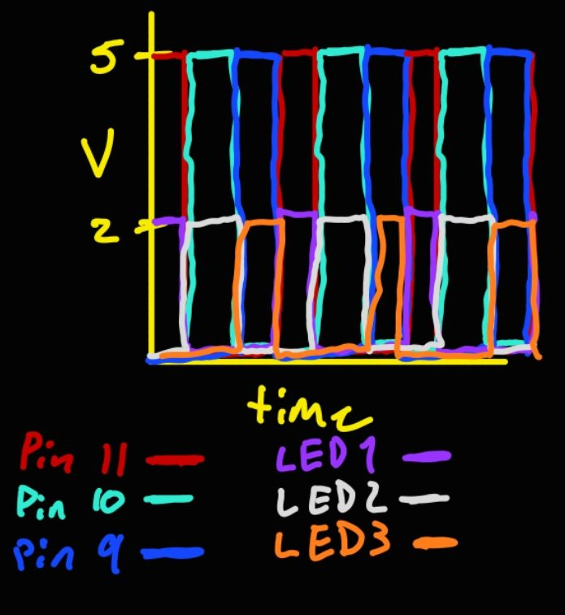

Questions:
1. Draw a raph where the X axis is time and the Y axis is voltage across the LEDs. Draw a line for each of your 3 LEDs.

2. How many LEDs could you blink independently with your arduino? How much current would that draw?
There are 14 digital pins and 6 analog pins that can be used to blink up to 20 LEDs
independently. Individually, each pin can supply about 20 mA to light up an LED, however,
the Arduino has a limit of 200mA. This means that we cannot blink all of the LEDs at maximum brightness,
but we can calculate how much current each LED should get. Given we have a limit of 200mA and 20 pins,
that means each LED should be getting 10mA of current. Assuming that we use red LEDs that use 2V,
then we can figure that (5-2)/0.010 = 300 ohms of resistance per pin.
3. How fast do you need to blink your LEDs until you no onger can tell that they are blinking?
After trial and error, I found that for me, having a delay of 10ms between blinks is how fast I need to blink my LED before I can no longer
tell that they are blinking.
4. Did you use AI tools in completing this assignment? if yes, please provide details no how/when, as well as a brief refelction. If no, you can either leave this question blank or provide other informatino if you'd like.